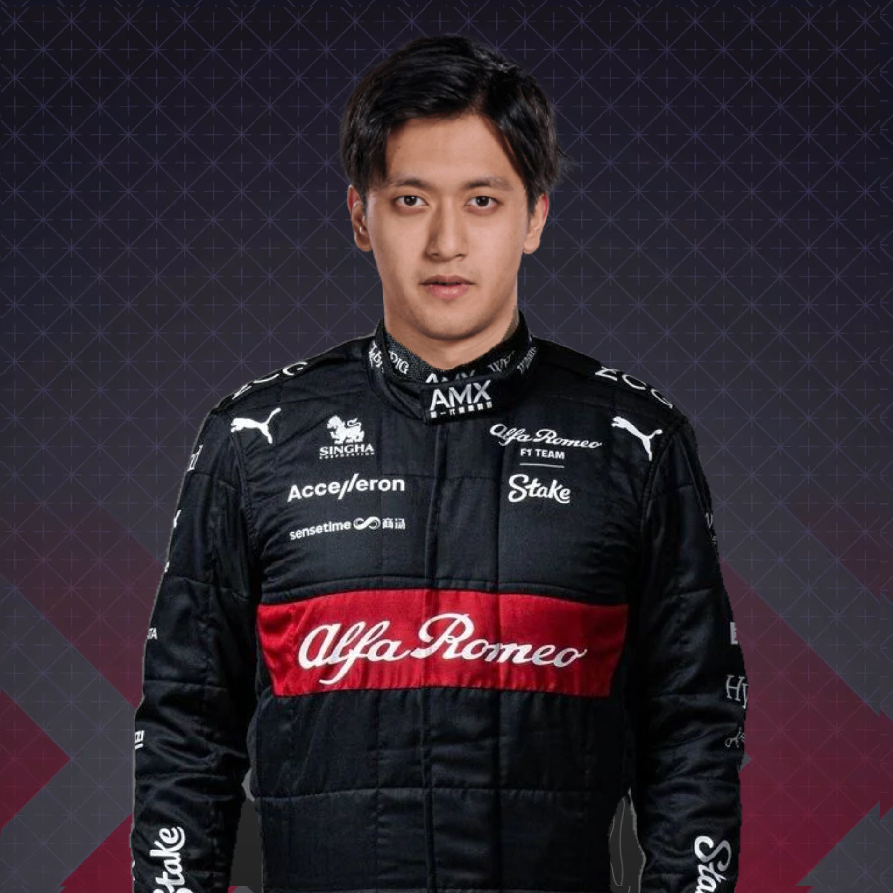
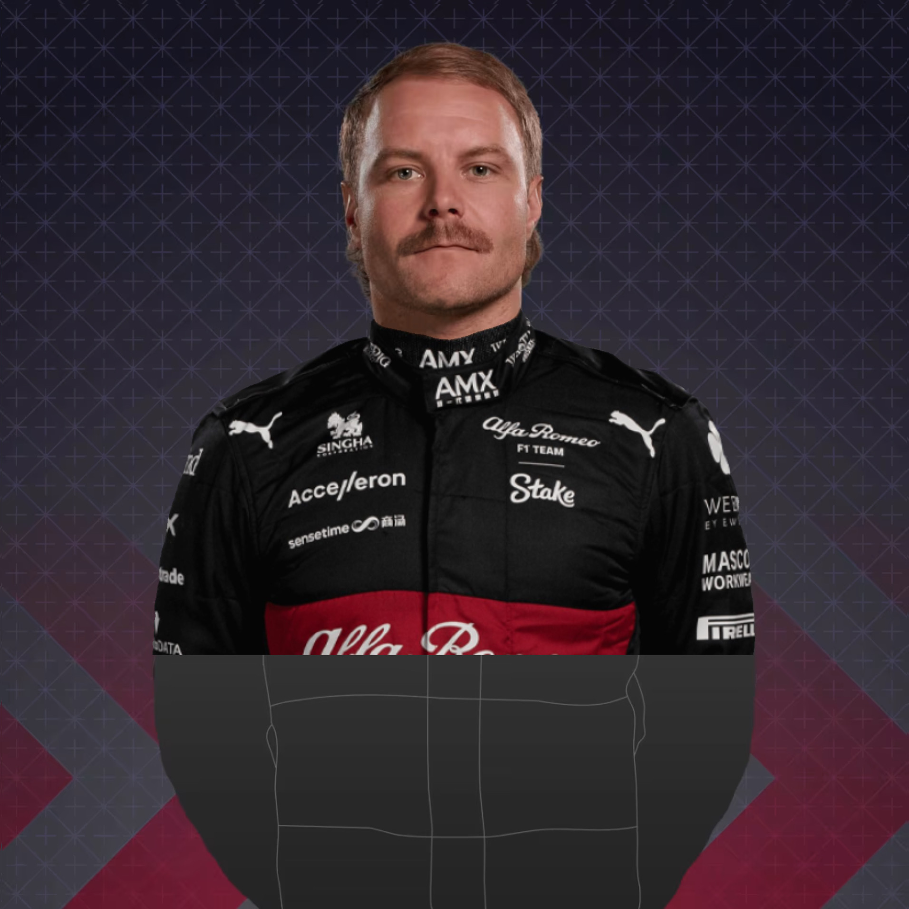

İşte Karşınızda F1 2024 kadrosu
-
Charles Leclerc
Yeni yaptığı anlaşma sayesinde 2028 yılına kadar yarışabilecek genç pilot Ferrariden çok umutlu.
-
Carlos Sainz
Carlos Sainz jr babasının toprak yoldaki kabiliyetini adeta pistlere taşıyor.
-
Lando Norris
Mclaren takımından bir yere ayrılmayacağını belirten pilot yeni sezon için heyecanlı.
-
Oscar Piastri
2023 sezonunda norris ile olağanüstü performans segileyen piastrinin 2024te gözler üzerinde.
-
Max Verstappen
2021 2022 ve 2023 dünya şampiyonu genç pilot bu yıl şampiyonluklarına bir yenisini katacağından emin.
-
Sergio Perez
aracın tamamen Verstappene göre tasarlanması ona geçtiğimiz sezon boyu büyük zorluklar yaşattı.
-
Lance Stroll
Çaylak pilot Kendini geliştirmeye devam ediyor
-
Fernando Alonso
2023 sezonunda hala hızlı olduğunu belli eden tecrübeli pilot bu yıl şampiyon olacağından emin.
-
George Russell
altında hangi araç olursa olsun bu isim her zaman rekabetçi
-
Lewis Hamilton
2022 ve 2023 sezonlarındaki araç fiyaskosundan sonra neler yapacağı merak konusu.
-
Yuki Tsunoda
Çaylak pilot agresif sürüş tarzı ile ne yapacağı belli olmayan bir tarza sahip.
-
Daniel Ricciardo
2023 sezonunun ortasında F1'e geri dönüp hızla araca adapte olması onda hala iş olduğunu gösteriyor.
-
Hulkenberg
F1 tarihinde podyuma çıkmadan en çok yarışa katılan ve en çok puan kazanan pilottur.
-
Kewin Magnussen
Güçlü manevraları ve dirseklerini dışarı atmış yaklaşımı ona pistte kötü çocuk ününü kazandırdı.
-

Zhou Guanyu
sezona iyi başlayan çaylak pilot kendini geliştirmekte.
-

Valteri Bottas
önceki sezonlarda mercedeste adeta memur gibi çalışan pilot alfa romeoda arka sıralara düştü.
-
Pierre Gasly
Takım değişikliği aleyhine olacak diye düşünürken aracın yavaş kalması onu kötü etkiledi.
-
Esteban Ocon
geçtiğimiz sezon kazandığı yarış ile ben buradayım diyor.
-
Logan Sargeant
çaylak pilot kendini geliştirmeye devam ediyor.
-
Alex Albon
Williams'ın Tecrübeli pilotu kazanmak için fırsat kolluyor